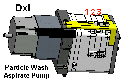
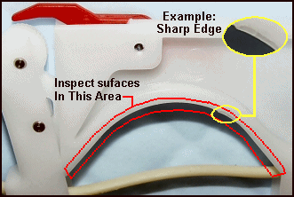
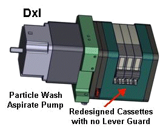
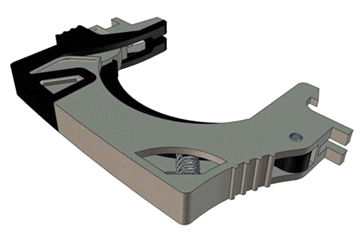

Troubleshooting Pump - Aspirate Peristaltic Pump
Purpose
This document provides instructions for troubleshooting issues in the aspirate peristaltic pump.When to perform
Perform this procedure when troubleshooting:
- Assay imprecision.
- Failures of the washed portion of System Check.
- Failures of HS System Check.
- Loss of flow through the aspirate probes.
- Peristaltic pump event logs.
Cassette Types
Mod 11102 Peristaltic Pump Cassette - Replace implements newer style peri-pump cassettes.
Distinguish the particle wash aspirate pumps by the cassette type:
- The old style pump has white cassettes with red tabs. The pump has a lever guard.
- The new style pump has beige cassettes with black tabs. The pump no longer has a lever guard and no longer uses a cassette numbering sequence.




These are critical Warnings that only apply to Old Style DxI Particle Wash Aspirate Pump cassettes (white with red tabs).
Warning:
- The cassette positions in old style Particle Wash Aspirate Pumps are critical to proper pump operation. They are numbered 1-3 beginning at the motor end and this orientation should be maintained.
- Cassettes are not identical (dimensions may vary slightly from one cartridge to another), once a cassette is installed in a pump and is functioning properly it is matched and should not be:
- Moved to a different position within the pump. Cassettes must always remain in the pump in the order in which they were positioned when the pump was initially numbered or received.
- Moved to another pump.
- Replaced by another cassette of the same style. Cassettes should be replaced by installing a replacement Pump Head assembly. However, the old style pump head or cassettes may be replaced with the new style cassettes as part of Mod 11102-Peristaltic Pump Cassette - Replace .
- A redesigned lever guard that is attached to Pump Head with factory numbered cassettes should never be placed on Peristaltic Pumps that have original lever guards because the width of the guard lever slot is narrower on the redesigned guard. Doing so may cause a cassette to 'click' one more positions tighter or looser which could cause tubing damage or loss of pumping action.
- Cassettes are easily damaged, inspect cassettes for damage.
Event Log Errors
| Event Log Message | Explanation | Causes | Resolution |
|---|---|---|---|
|
Aspirate pump state is inconsistent. Wash wheel aspirate pump failure. |
The peristaltic pump is not rotating, is rotating at the incorrect speed, or the index sensor is not detecting the rotation correctly. |
Mechanical issues:
Electrical issues:
|
Perform the troubleshooting procedure:
|
System Issues
| Failures | Action |
|---|---|
|
Perform the troubleshooting procedures:
|
Troubleshooting Procedures
| Procedure | Steps |
|---|---|
| Inspect Peristaltic Cassettes | Remove the peristaltic pump cassettes and inspect for damage. For the old style cassettes (white with red tabs), also inspect for sharp edges. The two styles of peristaltic pumps and cassettes are shown in the reference drawing.
|
| Test Peri-Pump Flow |
|
| Test Peri-pump Motion |
|